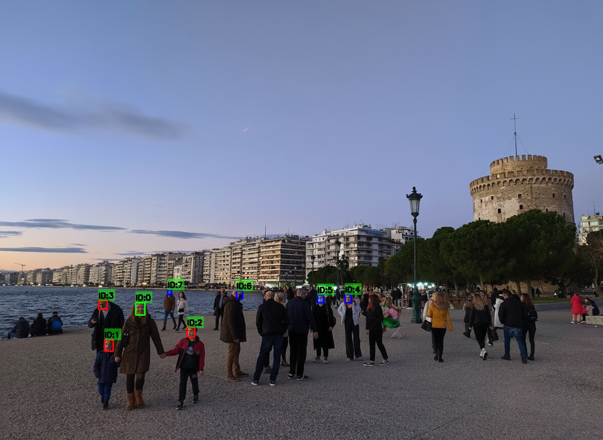
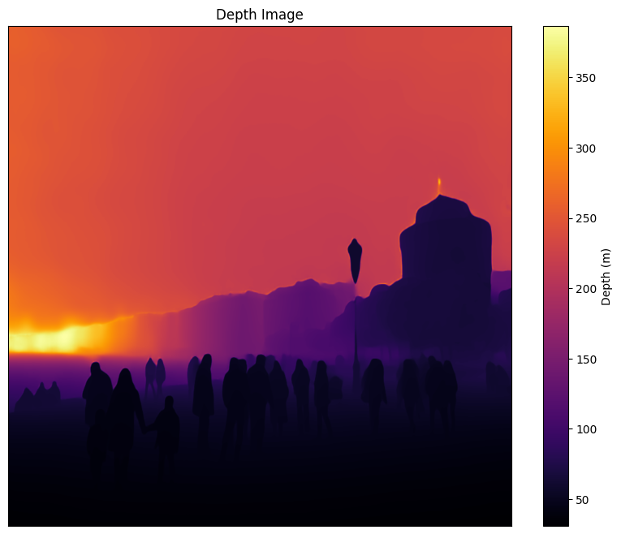
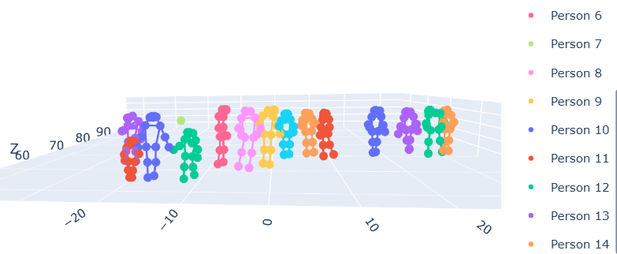
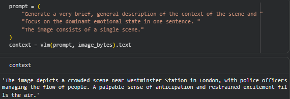
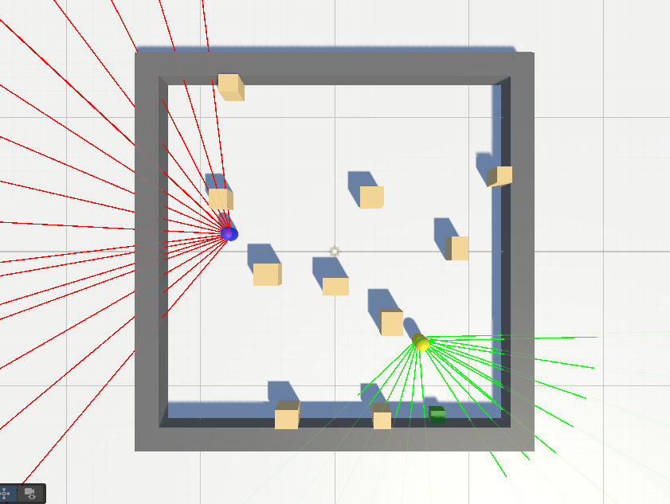
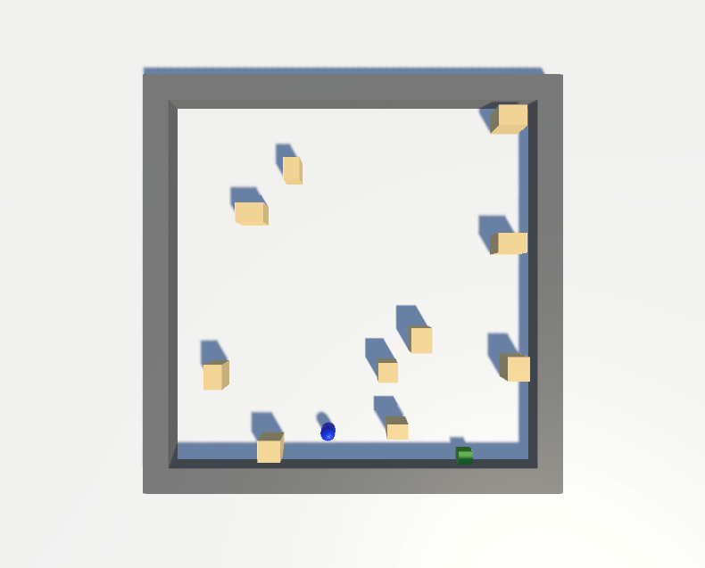
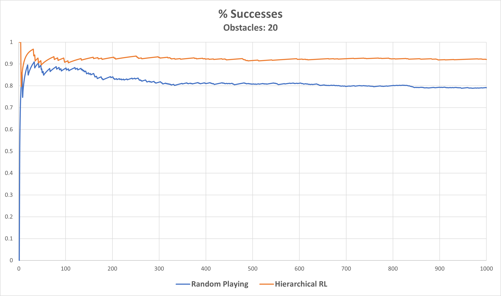
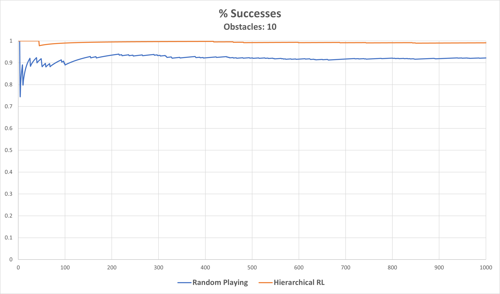

CMSML
Crowd Management System for Emergency Situations Using Machine Learning Technologies
Description
CMSML aims to develop an intelligent crowd management system for emergency situations by combining Machine Learning, Computer Vision, and Reinforcement Learning within a simulation environment. The system receives real-time information about the composition and characteristics of the crowd from RGB cameras and ML models that detect people, estimate densities, and extract attributes such as age groups or the presence of vulnerable individuals.
These data are streamed into a simulation environment where human behaviours are modelled as reinforcement learning agents. The platform performs near real-time evacuation forecasts and crowd management planning, supporting decision-makers during critical events. The overall goal is to provide a flexible and reusable tool that can be applied to venues such as airports, stadiums, shopping centres, or large cultural events, improving safety and preparedness while offering a rich testbed for research on human–machine interaction in crisis scenarios.
Funding
The project is is funded by Archimedes RC unit - National Recovery and Resilience Plan Greece 2.0, funded by the European Union under the NextGenerationEU programme.
Crowd simulation platform video presentation
Platform components
Crowd Knowledge Extraction and Behavioral Analytics
From a single RGB image, the pipeline extracts per-person demographic attributes, facial emotion and body pose , as well as indicators of mobility assistance (e.g., wheelchair, walking frame, crutches). When emotion confidence from facial expression is low, a VLM is prompted. First, it recognizes the scene context and then it uses this alongside the individual's cropped image, to refine the emotion estimate. A monocular depth estimator converts the image into a metric point cloud, placing each detected person in 3D space. This enables real-world interpersonal distance measurements without the need for additional sensing hardware. Pose keypoints are projected into this 3D space alongside age, gender and emotion, to provide the simulator with a spatially grounded crowd state ready for initialization.
Face and demographic knowledge extraction

AI-based crowd analytics for extracting crowd-related knowledge from scenes, including pedestrian detection and tracking, facial analysis, demographic estimation, emotion recognition, and behavioral understanding in real-world public environments.
Crowd Depth Estimation and Spatial Scene Understanding

AI-driven depth estimation and spatial perception framework for extracting crowd-related knowledge from urban environments, enabling distance-aware pedestrian analysis, crowd density estimation, spatial behavior understanding, scene reconstruction, and environment-aware monitoring for intelligent surveillance and simulation applications.
3D Human Pose and Crowd Behavior Analysis

AI-based 3D pose estimation framework for analyzing pedestrian posture, movement patterns, interactions, and crowd behavior in urban environments.
Vision–Language Context Extraction

Example of a VLM generating high-level textual descriptions of the scene, including location, roles (e.g., police officers, crowd), and dominant emotional tone. This context can be used to parameterise simulation scenarios or support decision-making.
Simulation Environment & RL Results
The CMSML simulator models agents navigating indoor environments with static or dynamic obstacles, using reinforcement learning to optimise evacuation behaviours. Below we show representative environments and the performance of a hierarchical RL policy compared with random behaviour.
Dynamic Obstacles & Mixed Policies

Simulation with moving obstacles, where one agent follows a trained RL policy (green rays) and another behaves randomly (red rays). The setup is used to evaluate robustness of learned behaviours under disturbance by non-cooperative agents.
Static Obstacles & Goal-Directed RL

Environment with static obstacles where an RL agent learns to reach the exit while avoiding collisions and dead ends. The scenario abstracts evacuation in cluttered indoor spaces.
% Successes – 20 Obstacles

Comparison of success rates over training episodes for random behaviour versus hierarchical RL in a dense environment with 20 obstacles. Hierarchical RL converges to substantially higher success than random playing.
% Successes – 10 Obstacles

In a sparser environment with 10 obstacles, hierarchical RL quickly approaches near-perfect success and maintains superior performance over random policies across 1,000 episodes.
Crowd behaviour modelingh
Simulation platform